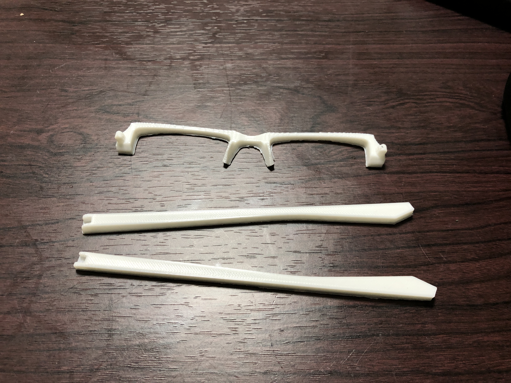

<!DOCTYPE html>
<html>
  <head>
    <title>prototype_wip</title>
    <link rel="stylesheet" href="../../assets/stylesheet/stylesheet.css">
    <meta name="viewport" content="width=device-width,initial-scale=1 user-scalable=0" >
  </head>
  <body class="post1_body">
    <header class="post1_header">
      <h1>prototype wip</h1>
    </header>
    <main class="post1_main">
      <h2>メガネを出力</h2>
      <div>
        
      </div>
      <div>
        <p>
          僕はメガネのフレーム部分がメガネクリーナーになるメガネを作ろうと考えています。<br>
          まずは、Downloadしたメガネを３Dプリントしてみました。
        </p>
      </div>
      <h2>出力してみての感想</h2>
      <div>
        <p>
          3Dプリンターを使うのは初めてだったので右も左も分からない状況でしたが出力する<br>
          のはいたって簡単でした。やっぱりどんなことでも「どうせ難しくて自分にはできな<br>
          い」という考えは概念ごと捨て去ることが大切だと思いました。最初プログラミング<br>
          を始める前もそんな感じでした。<br>
          メガネのフレーム部分(耳にかける側)をクリーナーにしたいのですがその部分を自分<br>
          でモデリングして３Dプリントしてみたいと思っています。
        </p>
      </div>
    </main>
    <footer>
      <a  style="color: rgb(255, 60, 0); margin-top: 30px;" href="./xtd-appli2.html">Return</a>
    </footer>
  </body>
</html>